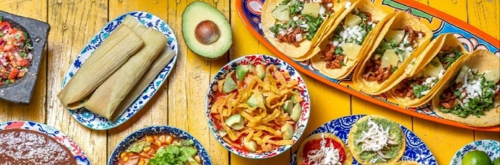
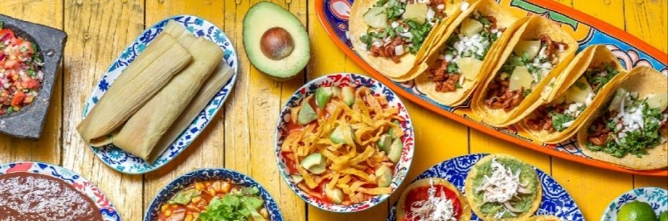

FUNDACIÓN:
31 de enero de 1824 como el 13.º Estado fundador de la Federación.
IDIOMAS:
Español, chontal de Tabasco, ch'ol, tseltal y tsotsil
UBICACIÓN:
Está ubicado en la región sureste del país. Limita al norte con el golfo de México (océano Atlántico); al este, con Campeche; al sureste, con el departamento de Petén en la República de Guatemala; al sur, con Chiapas; y al oeste, con Veracruz. Con un territorio de 24 738 km², es el octavo estado menos extenso —por delante de Estado de México, Hidalgo, Querétaro, Colima, Aguascalientes, Morelos y Tlaxcala—.
INFORMACIÓN
agricultura
biodiversidad
tradiciónes
mas información
lugares
|
|


 
